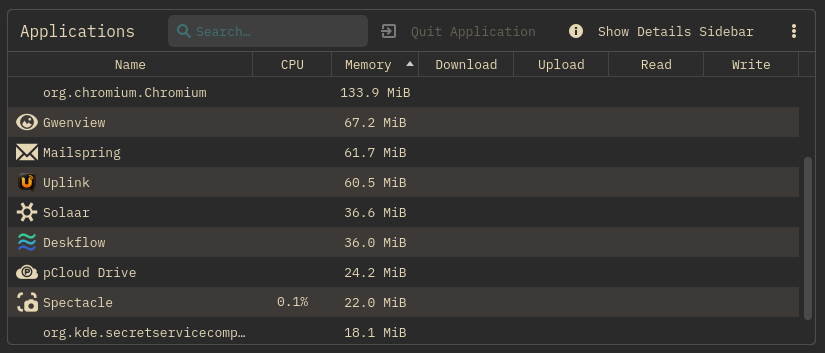

Every claim on this page is backed by the test suite, the compiler, or the source code.
Two Qt Test suites cover the IRC protocol parser and the mIRC chat renderer. Below is the live output from the last run.
Tests are run with ctest as part of the standard
cmake -B build -DUPLINK_BUILD_TESTS=ON build.
Source: tests/tst_ircparser.cpp,
tests/tst_chatformat.cpp,
tests/fuzz_ircparser.cpp,
tests/fuzz_chatformat.cpp.
Full CAP LS 302 negotiation. Only capabilities the server actually advertises
are requested; no blindly batched REQs that fail silently.
| Capability | What Uplink does with it | Status |
|---|---|---|
| message-tags | Transport layer for all tag-based features; full IRCv3 escape unescaping | Full |
| server-time | Uses server timestamp over local clock, essential for bouncer history replay | Full |
| batch | Buffers all tagged messages; delivers on close; 8-batch / 1 000-msg safety limits | Full |
| sasl PLAIN | Authenticates before appearing on-network; holds CAP END until 903/904 | Full |
| sasl EXTERNAL | Client certificate TLS auth; RSA and EC PEM keys supported | Full |
| chathistory | Sends CHATHISTORY LATEST after join; renders history dimmed with original timestamps | Full |
| draft/chathistory | Same as above, covers Ergo IRCd's draft name | Full |
| draft/typing | Sends active/paused/done TAGMSG; renders "nick is typing…" with auto-timeout | Full (send + recv) |
| msgid | Stored on every message; anchor for reply, react, redact | Full |
| draft/reply | Right-click → Reply; renders ↩ origNick indicator on incoming replies | Full (send + recv) |
| draft/react | Emoji picker; renders inline reactions per-message with count | Full (send + recv) |
| draft/message-redaction | Right-click → Delete; replaces with [message deleted] preserving reply anchors | Full (send + recv) |
| draft/multiline | Shift+Enter to compose; opens BATCH, sends lines, falls back gracefully | Full (send + recv) |
| draft/metadata-2 | Display name + avatar synced from server; async avatar fetch, cached per session | Full (send + recv) |
| labeled-response | CAP negotiated; labels tie server responses to outgoing commands | Negotiated |
| multi-prefix | NAMES returns all mode prefixes (e.g. @+ for op+voice) | Full |
| away-notify | Real-time away/back status tracked per-nick | Full |
| chghost | Single quiet status line instead of fake QUIT+JOIN flood | Full |
| account-notify | Updates per-nick account field on services login/logout | Full |
| account-tag | Account name shown as tooltip on nick and in chat view per-message | Full |
| extended-join | Populates account on join without needing WHOIS | Full |
| invite-notify | Posts invite lines to channel or server buffer depending on context | Full |
| setname | Receives real-name changes; /setname changes your own without reconnect | Full (send + recv) |
| userhost-in-names | Strips !user@host from display; stores for future ban/ignore work | Full |
| Monitor | Sends MONITOR + after welcome; /monitor add|del|list|status commands | Full |
| WHOX | Detects ISUPPORT token; uses WHO %cnfa,42 when available; falls back to plain WHO | Full |
| sts | Caches STS policy to disk (sts.ini); enforces TLS on reconnect (HSTS equivalent) | Full |
| standard-replies | Routes FAIL/WARN/NOTE to the correct buffer with colored [FAIL]/[WARN]/[NOTE] prefix | Full |
| cap-notify | Handles CAP NEW / CAP DEL to stay in sync if server cap set changes at runtime | Full |
| netsplit batch type | Collapses QUIT flood into one summary line per channel | Full |
| netjoin batch type | Collapses JOIN flood into one summary line per channel | Full |
| UTF8ONLY ISUPPORT | Detects token in 005; posts status line to server buffer | Detected |
| WebSocket transport | ws:// or wss:// per-server; all features (SASL, STS, proxy) work identically | Full |
| znc.in/playback | Sends PLAY * 0 to ZNC on connect; renders replayed messages with original timestamps | ZNC only |
| znc.in/self-message | Echoed messages from other clients show as your outgoing messages | ZNC only |
| soju.im/bouncer-networks | Lists attached networks after CAP negotiation | soju only |
| soju.im/read | Syncs read position across all clients via MARKREAD | soju only |
Full = negotiated and actively used. Detected / Negotiated = negotiated, feature-flagged internally. ZNC / soju only = only requested when bouncer type is configured. Full details: ircv3.md.
Four tools run against the codebase as part of the standard build and CI workflow. The current build is clean across all four.
Sanitizer build: cmake -DUPLINK_ENABLE_SANITIZERS=ON (requires GCC or Clang).
libFuzzer mode: cmake -DUPLINK_BUILD_FUZZ=ON (requires clang).
CodeQL: .github/workflows/codeql.yml (runs in GitHub Actions).
No suppressed warnings. Every warning flag is on for the main binary.
Optional -Werror and -fsanitize=address,undefined modes are available as CMake options.
Three CI workflows run on every push to main and every pull request. Nothing merges without passing all of them.
The UI never touches the socket. The IRC layer never touches widgets. Data flows one direction through Qt signals, with no circular dependencies.
All IRC message text passes through htmlEscape() before rendering. mIRC colour/bold codes are translated to inline CSS spans, so untrusted input can never inject raw HTML.
All connections use QSslSocket. Plain TCP is available as an explicit opt-in. STS policy enforcement means once a server advertises STS, plain connections are refused permanently.
Server passwords and SASL credentials are stored via QtKeychain, the system credential store (libsecret / Windows Credential Manager / macOS Keychain), not plaintext config files.
IRCv3 batches are bounded at 8 simultaneous and 1 000 messages each. A server that opens a batch and never closes it cannot grow client RAM without limit.
Outgoing messages that exceed the 512-byte IRC line limit are automatically split at word boundaries before sending. No truncated lines, no server errors.
Multi-line pastes prompt before sending when they exceed the flood threshold, preventing accidental channel spam from paste operations.
A full IRCv3 client (TLS, SASL, link previews, DCC) with a resident footprint smaller than a browser tab. No Electron, no bundled Chromium. Your mileage varies with how many networks, channels, and scrollback you keep open, but the baseline stays light.

Here's what the numbers above add up to.
13 unit tests cover every edge case of the RFC 1459 / IRCv3 message format: tags, prefix types, multi-param, trailing-only, CRLF stripping, server-time decoding, tag unescaping, and malformed input. Confirmed by 50 real-world message inputs in the fuzz corpus.
17 unit tests cover XSS-critical paths: <, &, ",
mIRC bold/italic/underline/colour with proper reset, linkification that only wraps
http/https (not ftp), highlight-word rendering, and empty-input edge cases. A dedicated
fuzz harness also hammers the renderer with hostile input: mIRC codes, emoji/ZWJ runs,
RTL overrides, invalid UTF-8. No raw IRC text reaches the browser engine unescaped.
The test suite runs under AddressSanitizer and UndefinedBehaviorSanitizer on every push. Zero heap errors, zero stack errors, zero integer overflows, zero null dereferences. clang-tidy, cppcheck, and GitHub CodeQL also run each build, all clean.
37 IRCv3 capabilities, each with an implementation that was tested against a live Ergo IRCd instance. Bouncer-specific caps are only requested when a bouncer type is configured.
8 warning flags catch narrowing, shadowing, sign mismatches, C-style casts, and non-virtual destructors at compile time, before they become runtime bugs. The codebase compiles clean at all 8 levels with GCC 16.
Yes, we use AI coding tools. Here's why that doesn't change what you're getting.
UplinkIRC is being built by a group of volunteers, some with professional development backgrounds, and over 100 years of combined time on IRC networks. AI helped us write code faster. It didn't decide what the security model should be, which IRCv3 caps to support, or how to handle credentials. Those calls came from people who've been using and building on IRC for decades. The tool doesn't replace the judgment; it just types faster than we do.
TLS enforced by default; invalid certs disconnect immediately. Passwords stored in the OS keychain, not config files. Config written atomically with 0600 permissions. CTCP replies rate-limited per nick. DCC filenames sanitized against CTCP injection, stalled transfers detected and aborted. Link previews block RFC 1918 and loopback to prevent LAN probing. Reactions accepted only for messages actually held in the buffer, so fabricated msgids can't grow memory. None of this is accidental.
37 IRCv3 protocol features with full CAP LS 302 negotiation, SASL PLAIN and EXTERNAL, STS policy enforcement, bouncer-specific extensions for ZNC and soju. You don't get these right by prompting an LLM. You get them right by reading the specs and testing against live servers.
Unit tests for IRC parsing and HTML rendering, including malformed input. CI pipeline across Linux, Windows, macOS, and FreeBSD. Every release ships with a real changelog. This is a maintained project with discipline, not a one-shot dump.
The project is open source, the code is auditable, and the security decisions are documented. Anyone who wants to evaluate it is welcome to read it. The question isn't "was AI used", it's "is this safe?" The answer is in the codebase.